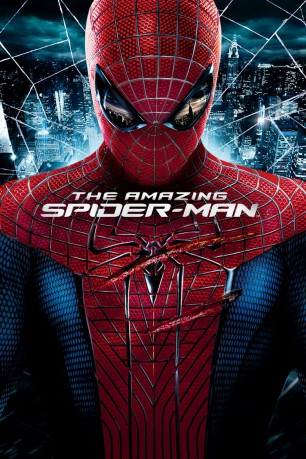

 
 IMDB-Wertung: 7.0 / 10
IMDB-Wertung: 7.0 / 10  Metascore:
Metascore: 
Peter Parker ist ein Außenseiter, der als kleiner Junge von seinen Eltern verlassen worden ist und seitdem von seinem Onkel Ben und Tante May aufgezogen wird. Wie die meisten Teenager, versucht Peter herauszufinden, wer er ist und wie er zu der Person geworden ist, die er heute ist. Außerdem findet er seine erste High School Liebe, Gwen Stacy. Gemeinsam kämpfen die beiden um Liebe, Hingabe und Geheimnisse. Als Peter einen mysteriösen Aktenkoffer entdeckt, der einst seinem Vater gehört hat, fängt er damit an, Nachforschungen anzustellen, weil er verstehen will, warum seine Eltern damals so plötzlich verschwunden sind. Seine Recherchen führen ihn direkt zu Oscorp und dem Labor von Dr. Curt Connors, dem ehemaligen Partner seines Vaters. Nachdem Spider-Man sich auf einen Kollisionskurs mit Connors Alter Ego The Lizard begeben hat, muss Peter einige lebensverändernde Entscheidungen treffen, wie er seine Kräfte einsetzt. Und er formt sein Schicksal, ein Held zu sein.
Jahr: 2012
Dauer: 136 Minuten
FSK: 12
Land: USA Studio: Columbia PicturesTonspuren: DTS - ,
Untertitel:
Auflösung: 1080p (1920×800) Größe: 5283 MB
Genre: Action, Sci-Fi, Abenteuer
Regisseur: Marc Webb
Drehbuch: James Vanderbilt, Alvin Sargent, Steve Kloves, James Vanderbilt, Stan Lee
Soundtrack: James Horner
Darsteller:
 Andrew Garfield als Spider-Man / Peter Parker
Andrew Garfield als Spider-Man / Peter Parker Emma Stone als Gwen Stacy
Emma Stone als Gwen Stacy Rhys Ifans als The Lizard / Dr. Curt Connors
Rhys Ifans als The Lizard / Dr. Curt Connors Denis Leary als Captain Stacy
Denis Leary als Captain Stacy Martin Sheen als Uncle Ben
Martin Sheen als Uncle Ben Sally Field als Aunt May
Sally Field als Aunt May Irrfan Khan als Rajit Ratha
Irrfan Khan als Rajit Ratha Campbell Scott als Richard Parker
Campbell Scott als Richard Parker Max Charles als Peter Parker, Age 4
Max Charles als Peter Parker, Age 4 C. Thomas Howell als Jack's Father
C. Thomas Howell als Jack's Father Barbara Eve Harris als Miss Ritter
Barbara Eve Harris als Miss Ritter Stan Lee als School Librarian
Stan Lee als School Librarian Danielle Burgio als Nicky's Girlfriend
Danielle Burgio als Nicky's Girlfriend Mark Daugherty als OsCorp Intern
Mark Daugherty als OsCorp Intern Skyler Gisondo als Howard Stacy
Skyler Gisondo als Howard Stacy Vincent Laresca als Construction Worker
Vincent Laresca als Construction Worker James Chen als Police Officer
James Chen als Police Officer Tia Texada als Sheila, Subway
Tia Texada als Sheila, Subway Michael Massee als Man in the Shadows
Michael Massee als Man in the Shadows Michael Arthur als Doorman , uncredited
Michael Arthur als Doorman , uncreditedDatei: X:\Comic-Filme\Spider-Man\Amazing Spider-Man 1, The (2012, FSK12, 1920x800) 3D.mkv seit 14.02.2015
Festplatte: Comicverfilmungen+MusikCD
 Es gibt insgesamt 14 Filme in der Gruppe 'Comic-Filme\Spider-Man'
Es gibt insgesamt 14 Filme in der Gruppe 'Comic-Filme\Spider-Man'